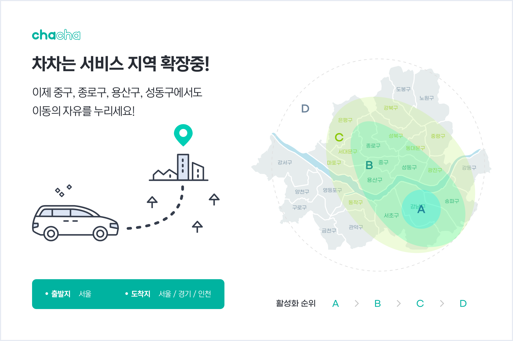

렌터카 기반 승차공유 플랫폼 차차
8월 서울 내 서비스 활성화 지역 4곳 확장
기존 서비스 활성화 지역 강남 3구 외에
중구, 종로구, 용산구, 성동구 신규 4개 지역 확장

승차공유 플랫폼 ‘차차’가 연내 공항, 골프, 시간대절 예약 상품 등의 신규 서비스 오픈 계획을 공개한 데 이어 증차를 통해 8월부터 서비스 활성화 지역 확대를 실시한다고
밝혔다.
먼저 차차는 강남 3구(서초,강남,송파)를 중심으로 운행이 활성화 되어있던 서비스 지역을 8월부터 중구를 시작으로 종로구, 용산구, 성동구 지역으로 순차적으로 확대할 것을 예고했다. 타다
베이직이
중단된 이후로 대체 서비스를 찾는 가입자가 증가하자 적극적으로 고객 유치에 나선 것이다.
기본적으로 차차는 서울 전 지역에서 호출 가능하며, 서비스 활성화 순위가 높은 지역일수록 빠른 배차가 진행되고, 서비스 활성화 순위가 낮은 지역은 주변에 차량이 있는 경우 이용이
가능하다. 이번
서비스
활성화 지역 확대를 통해 서울 내 교통 요지로 불리는 구간 내에서 빠른 배차가 가능하게 되었으며, 서비스 볼륨과 CS 부분도 강화하여 한 단계 도약할 예정이다.
이와 함께 차차는 ‘서비스 활성화 지역 확대’를 기념해 이달 31일까지 모든 고객이 이용 가능한 20% 할인 쿠폰 증정 이벤트를 실시한다. 해당 쿠폰은 이벤트 기간 동안 제한 없이 사용
가능하며, 신규
서비스 활성화 지역에서 호출 시 최대 10,000원까지 할인 적용이 가능하다.
여객법 개정안이 의결된 이후 모빌리티 업계가 택시면허 기반의 업체들 위주로 개편되고 있는 상황에서 렌터카 기반 플랫폼인 차차가 공격적인 행보를 보이는 데는 이유가 있다. 모빌리티 시장은
물론
경기
전반이 코로나 장기화로 인해 극도로 침체된 가운데 드라이버들에게 프리랜서, 즉 개인사업자 자격으로 원하는 때 필요한 시간만큼 일하며 추가 소득을 올릴 수 있는 일자리를 적극 공급하는 게
이번
서비스
활성화 지역 확장의 목표 중 하나라는 것이다.
차차크리에이션은 차차의 드라이버들이 자율적으로 운행하는 자유 개인사업자에 가까운 만큼 고객들에게 높은 퀄리티의 서비스를 자발적으로 제공하게 된다고 설명했다. “장기화 된 코로나 환경으로
일자리가
경색된
와중에 일 한 만큼 벌어갈 수 있는 플랫폼은 흔치 않다. 단순히 고객 니즈에 맞춰 사업을 확장하는 것 뿐만 아니라, 새로운 형태의 일자리를 창출해 가계 경제 안정화에 기여하는 것이
목적”이라며
“앞으로
신규 상품들이 추가 론칭되면 양질의 일자리를 더 많이 공급할 수 있을 것”이라고 강조했다.
서울시 강남구 테헤란로 151, 4층 / 언론/홍보 한나연 02-6205-3311/ nayeonayeon@chachacreation.co.kr